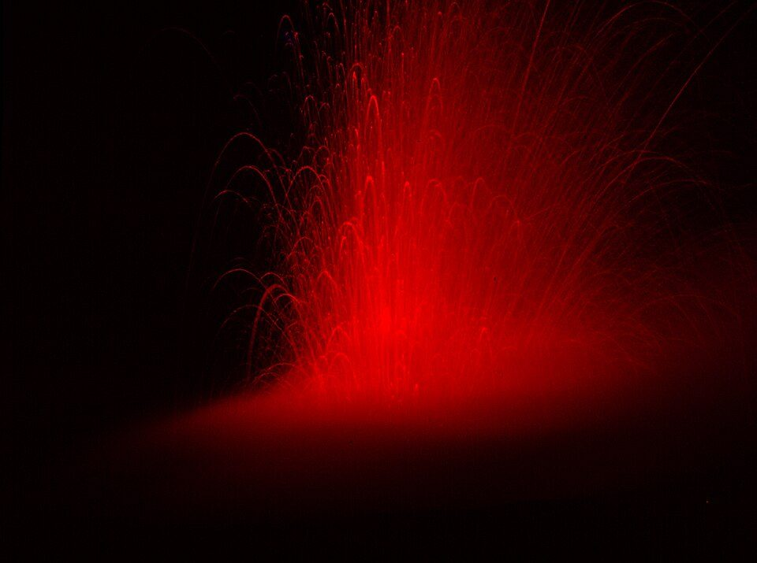
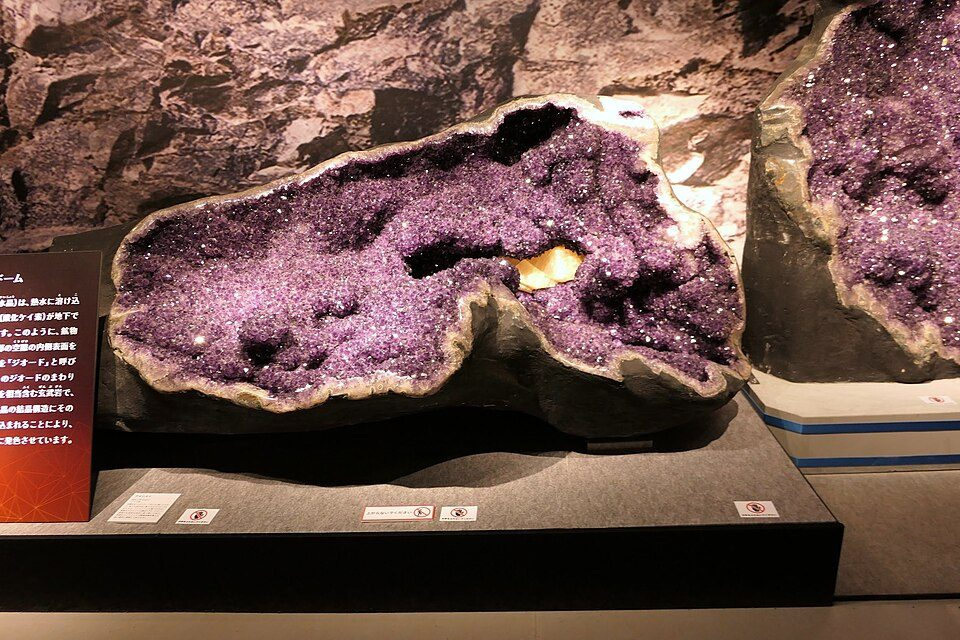

Planet Earth · 6 articles
Inside the Earth
The planet's layers, tectonic plates, volcanoes, earthquakes, rocks and minerals, and the 4.54 billion years of history they hold.
Beneath our feet lies a living planet: a core as hot as the surface of the Sun, a mantle that flows very slowly and a crust broken into plates that move, collide and pull apart. That movement gives rise to mountains, volcanoes and earthquakes.
 The Earth's layersCrust, mantle and core: a 6,371 km journey to the centre of the planet, where it is as hot as the surface of the Sun.
The Earth's layersCrust, mantle and core: a 6,371 km journey to the centre of the planet, where it is as hot as the surface of the Sun. Plate tectonicsThe Earth's surface is a jigsaw of plates moving a few centimetres a year. That is how oceans open and mountain ranges rise.
Plate tectonicsThe Earth's surface is a jigsaw of plates moving a few centimetres a year. That is how oceans open and mountain ranges rise.- VolcanoesWindows into the Earth's interior: how they work, history's great eruptions and Spain's volcanoes, from Teide to La Palma and Olot.
 Earthquakes and tsunamisWhy the Earth shakes, how earthquakes are measured, the most destructive in history and those that have struck Spain.
Earthquakes and tsunamisWhy the Earth shakes, how earthquakes are measured, the most destructive in history and those that have struck Spain.
Rocks and mineralsThe Earth's building blocks: how rocks form, what minerals are and where to find the most astonishing crystals, from Naica to the Pulpí geode. The history of the EarthFrom a ball of molten rock to a blue planet full of life: the Earth's 4.54 billion years, told era by era.
The history of the EarthFrom a ball of molten rock to a blue planet full of life: the Earth's 4.54 billion years, told era by era.